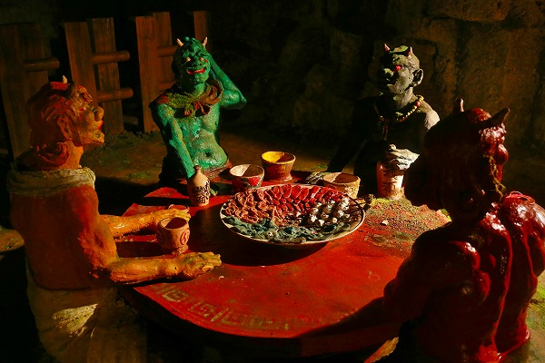
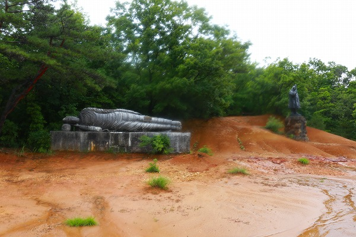
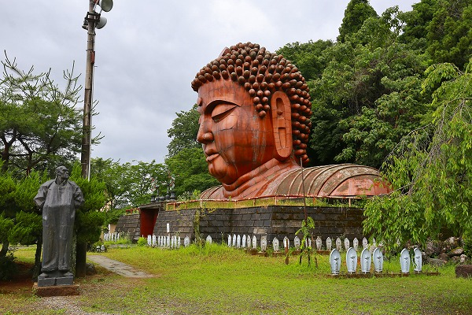

久々に
ハニベ巌窟院に行ってきた。
前回の訪問は1998年だったので約20年ぶりの再訪となる（再訪したのは2017年）。
その20年の間にここも色々ありまして…
まあ、気になる方は調べてください。
一応基本的な説明を。
ここはとある彫刻家によって
1951年に開かれた洞窟寺院。
洞内には地獄巡りをはじめとした
様々なキテレツ彫像が並んでいるという北陸を代表する珍寺なのだ。
そのシンボルが巨大な
頭だけの大仏。
訪問時は驚くほどの豪雨。
その後どんどん雨風は激しくなり、ほぼ台風状態。
でも行くんだよお！
入場料を払い、中へ入る。
JRのポスターにもなった頭だけの大仏も雨粒が凄すぎてとても撮影出来ず。
つかカメラをバッグから出せませんよ。
とりあえず雨に関係のない洞窟を先に見ちゃいましょう、という算段。
洞窟に向かう途中の水子供養堂。
どんどん暗くなってきて夜みたいだけど、
コレ朝の10時ですからねっ！
中には水子地蔵がズラリと並んでいる。
玩具やぬいぐるみ、子供服なども沢山奉納されている。
何とも重苦しい雰囲気だ。
さらに先へ進むと
隆明殿という建物があった。
主に初代院主の作品を中心に展示がなされている。
初代院主はあの朝倉文夫の朝倉塾長や日展の審査員を務めた著名な彫刻家だそうである。
館内には仏像を中心に様々な彫像があった。
その中のひとつ、
八田与一像。
小品だが、この像は台湾では知らない者がいない程有名な彫像だ。
八田は日本統治時代の台湾に
命懸けで東洋一のダムを造った人物として知られている。
そのおかげでこの地域は台湾一の穀倉地帯になったそうな。
もしかしたら
台湾で一番有名な日本人かも知れない。
台南の烏山頭ダムの近くにはこの像と同じ形の八田像（等身大）がある。
恐らく八田が金沢出身だったのでここの初代院主と何らかの縁があったのかもしれない。
いずれにせよ初代院主の最も有名な作品、という事になろう。
で、いよいよ洞窟に突入である。
相変わらず酷い雨で、仁王像が立つ入口は滝のように水が流れている。
つか完全に滝だよ…。
中に入る。
ここは採石場の跡地で、所々広いホールのようなところがある。
最初のホール。
釈迦一代記をテーマにした彫像やレリーフが並ぶ。
雨は凌げるのでありがたいのだが、
ものっっっっっっっ凄い湿気だ。
誕生仏サマもこんな感じ。びちゃびちゃですがな。
さらに先も湿気が凄い。
カメラのレンズなんて曇りっぱなしですよ。
阿修羅像も蜘蛛の巣はった上に湿気で水滴が付いちゃってもう大変。
蜘蛛の巣と水滴と苔が作品群にさらに凄味を加えている。
仏像のみならず様々な彫像が次から次へと現れ、
全体的にはカオスな空間だ。
インド風の彫像とか
抽象的な作品とか
エロい感じの作品とか
この辺りの作品はどうやら二代目院主の手によるものらしい。
そうこうしている内にあのコーナーが現れる。
そう、
地獄巡りである。
ひき逃げの罪。
ひき逃げしたらあの世で轢かれるという。
この辺りは二代目院主のものと思われるが、陰惨な地獄世界が展開されている。
人面魚…

鬼の食卓。
メニューは
目玉の串ざし
耳と舌の甘煮
面皮の青づけ
人血酒
その割には酒の徳利にはむぎ焼酎二階堂って書いてあるぞ。
これらの料理を調理する人。
人をたぶらかした罪。
舌を抜かれ目を突かれる。
へび地獄
スミマセン。これって仏教の因果応報とか関係なしに単に
作者のダークな趣味ですよね？
骸がゴロゴロと。
実はこの辺りには2000年前後には
当時の時事ネタが盛り込まれた彫像がたくさんあったという。
セクハラ地獄やらノーパンしゃぶしゃぶ地獄とか佐川急便像とかビンラディン像とか…
今や若い方にはほとんど何のことやら、だとは思うが。
私が最初に訪れた1998年にはそのような作品群は無かったし、2004年頃にはここ自体が時事ネタになってしまったために撤去されてしまったという。
つまりここが一番おかしなことになっていた時期を私は知らない。
チョット残念な気もするが、それはそれで良かったような気もする。
というのも私の記憶の中ではこのハニベ巌窟院がある程度の品格を保ったままでいるからだ。
先へ進む。
乱用の罪。
一物重く足腰立たず
悪だくみ
何かコレも何言ってるか良く判らなかったです。
不敬罪。
カラフルな六地蔵。
不動明王。
この辺は初代院主のモノだろう。
残念ながら
初代と二代目の技量と品格の差が大きくて余計二代目の彫像が面白く見えてしまうのだ。

閻魔大王。
法然と最澄。
釈迦十大弟子。
愛染明王。目が光る。

最後には各種胸像が並ぶ。
そんなこんなで洞窟巡りは終了。
外に出たら雨はほとんど止んでいた。
滝のようだった入口も、雨水はチョボチョボ。
来る時はほぼ視界に入ってなかったが、何故か像と虎がいた。
しかし湿気は相変わらずでチョット油断するとこんな感じ↑に。
山上の日本一大涅槃像へ行ってみる。
看板には雨の日や足に自信のない方は戻ってくださいと書いてあったが、雨止んだし足に自信はないけど、以前行った事があるのでまあ、大丈夫でしょ。

で、日本一の大涅槃像。
日本一じゃないじゃん！
…というツッコミも20年前に既にやったので、今回は省略。
画質がトイカメラみたいなのは湿気の所為ですよ。
まるでミストサウナの中にいるみたいだった。
山上から下り、先程入った
隆明殿の外観。
さらに下り、先程訪れた水子地蔵が並んでいた
水子地蔵堂。
先程の外観と見比べていただきたい。

やっと大仏さんの姿がまともに見れるようになった。
高さ15m、1983建立。初代院主の没年が1981年。
時期的に初代が晩年に造りはじめて志半ばで逝去したのか、二代目が造ったのかは不明。
横には完成予想像。
身体に比べて頭が小さい。つか肩幅。
多分完成することはないだろう。
神馬。これは初代の作だろうな。
こっちの馬は二代目なのかな。
これにてハニベ巌窟院ツアーは終了。
売店ではTシャツやステッカーなど新しいグッズが増えていた。
この手のスポットは大抵年を追うごとに寂れていくのだが、ここは新しい人が入ったのだろうか、やや復活した感があった。
最後に遠景。
やっぱり凄いインパクトだ。
色々あったが今後も北陸屈指の珍寺として存続していただきたい。